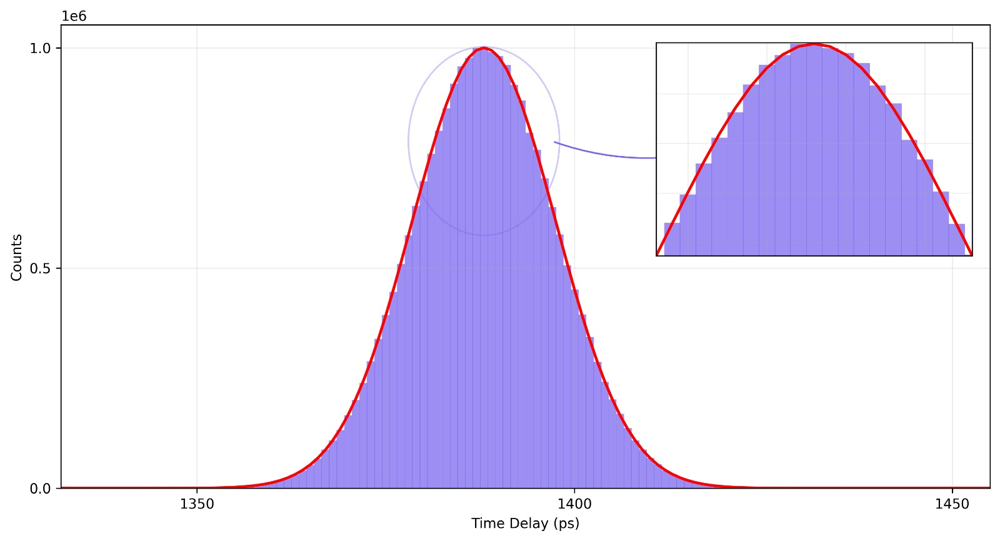

Nexatom UTT_810 / UTT810 Universal Time Tagger
An 8-channel FPGA-based universal time tagger with 1 ps time bin width, <10 ps specified timing jitter, 4 ns dead time, and GUI/API support for saving absolute time tags.

Specification highlights
Relevant workflows
Coincidence counting
Multi-fold coincidence histograms up to 8 channels.
Correlation measurements
Real-time linear and multi-tau auto/cross correlation modes with minimum 8 ns bin width.
Synchronized timing
External 10 MHz TTL clock support through GPIO pin 2.
Quantum optics
Relevant for timing workflows used in quantum optics experiments.
Spectroscopy
Relevant for time-correlated measurements and spectroscopy workflows.
Multi-channel event timing
Eight input channels support multi-channel event timing and analysis.
Real-time FPGA processing

Coincidence peak
Timing histogram from a two-channel measurement, displayed with Gaussian fit.
Histogram pipeline
Real-time FPGA time histogram with minimum 1 ps bin width and multi-stop support.
External sync
External 10 MHz TTL synchronization support for coordinated instrument timing.
Grouped specifications
| Model | Nexatom Universal Time Tagger UTT_810 / UTT810 |
|---|---|
| Channels | 8 input channels |
| Timing | 1 ps time bin width, <10 ps timing jitter specification, 4 ns dead time |
| Processing | Time histogram, coincidence histogram, and correlation measurement with Real-time FPGA processing |
| Inputs | 0 to 5 V input range, 0 to 2.5 V threshold in 1 mV steps, 1 mV to 100 mV hysteresis, 50 ohms impedance, 1 ps to 4 ns physical delay |
| Interface | USB 3 data transfer >300 MB/s |
| Software | GUI and API with absolute time-tag saving |
| Synchronization | External 10 MHz TTL clock signal on GPIO pin 2. The GUI detects a valid clock when Use External Sync is enabled. |
Measured performance
A two-channel coincidence measurement with UTT 810 produced a combined coincidence peak of approximately 49 ps FWHM / 20.81 ps RMS across two channels, with an effective single-channel contribution of approximately 24.5 ps FWHM / 10.5 ps RMS. These values include signal source and measurement-chain uncertainty.